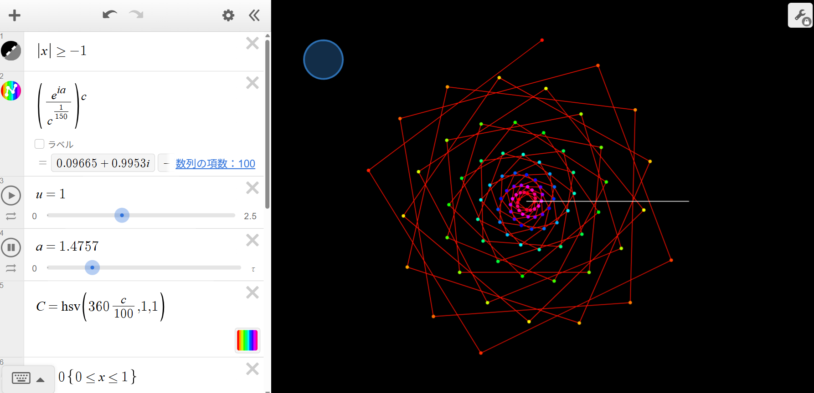
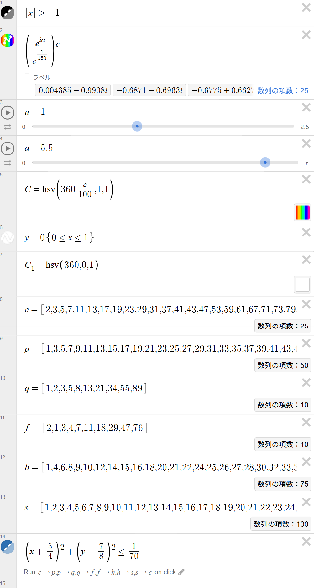
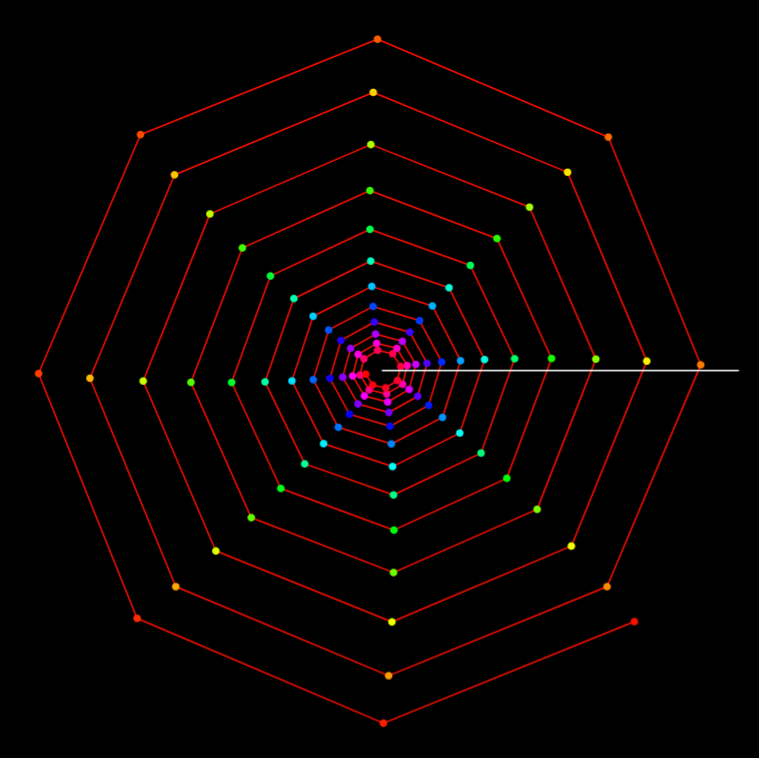
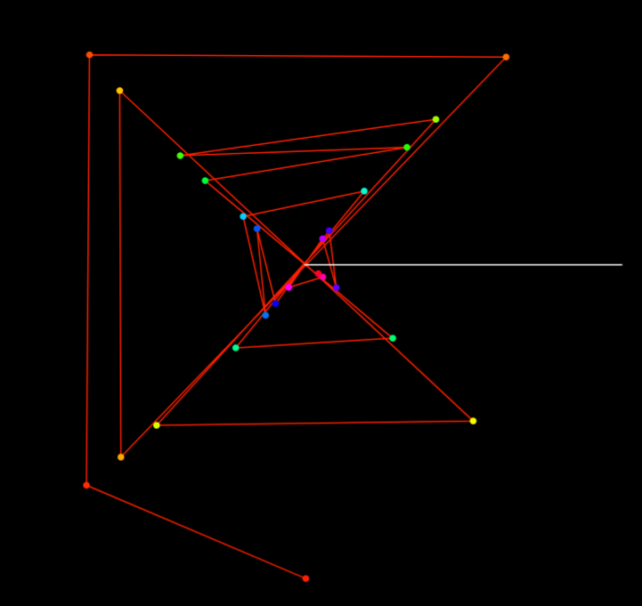
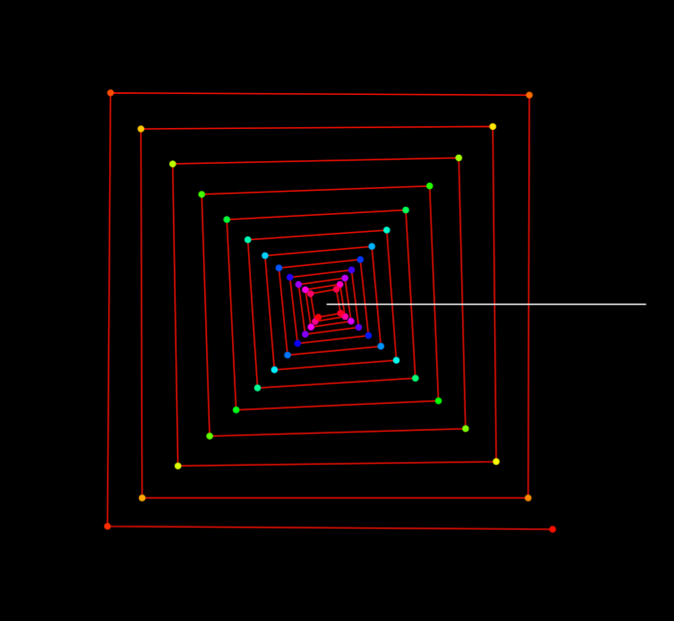
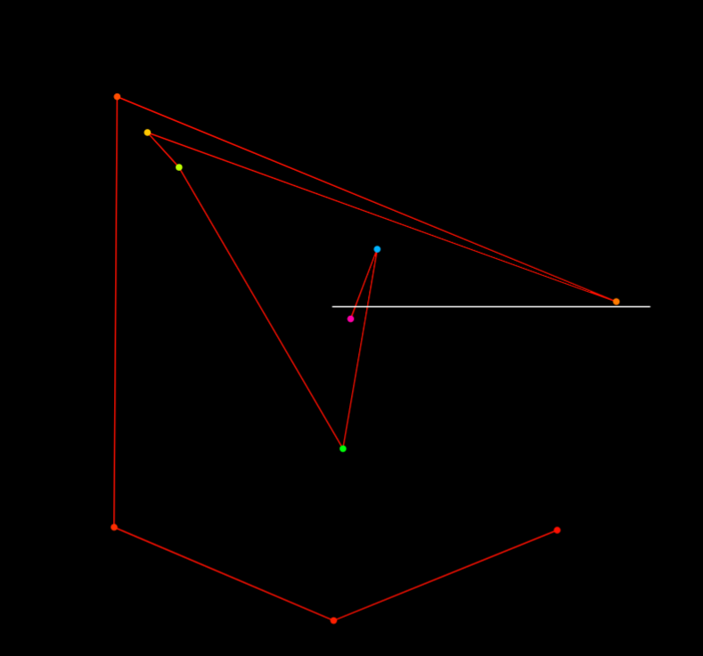
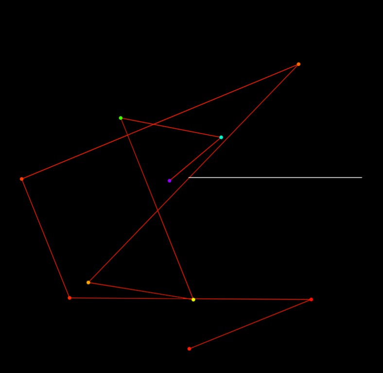
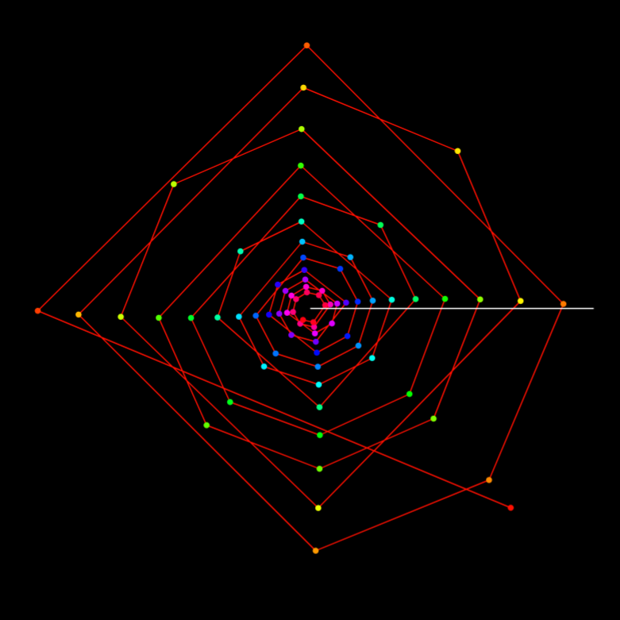

March 3, 2026
Sequence Pendulum Wave — Switching Sequences to Observe Position and Periodicity
Overview:
This work focuses on building a reusable experimental setup (an observation tool) for comparing different number sequences at the same phase setting, rather than producing a single fixed pattern.
This project is a “pendulum-wave-like” visualization (*1) that lets you observe how different number sequences
form patterns and periodic alignments when shown as a rotating motion.
Points are generated from the active sequence and connected by animated line segments.
By switching the sequence and comparing the same snapshot value (e.g., \(a=5.5\)),
you can visually explore how motifs (such as triangle- or square-like shapes) and alignment periods differ
across primes, odds, Fibonacci numbers, Lucas numbers, composites, and integers.
(*1) Visually it resembles a pendulum wave, but mathematically it maps sequence terms via complex rotation and connects the resulting points.
Note: All content on this page is originally explained by Reiji in Japanese. The English version is translated by AI and structured by a parent, with Reiji's final approval.
Reiji's Words and Ideas
- This is a pendulum wave that lets me observe the position of numbers and their periodicity by using a rotating motion. You can switch the behavior by pressing the blue button drawn on the screen. The lines connecting each number animate, so you can experience how the relative positions create motifs and how the points align with different periods.
- I implemented this because I wanted to know how sequences other than integers would behave. When I compared different sequences at the same value (for example \(a=5.5\)), I found cases where a certain sequence shows a square-like shape, and I could also see similarities across sequences.
- In particular, near \(a=5.5\), the composite-number view looks like a square but has vertices in eight directions. When I look at primes and odds, they also look square-like, and then when I check integers at the same moment, it can look like an octagon. I want to explore many more kinds of number behaviors.
- For example, near points where the pattern looks triangular—such as when \(a\) is close to \(2\tau/3\)— you can roughly predict that a triangle-like shape will appear. But when an unexpected appearance shows up, it becomes very interesting.
Formulas and Variables
-
I drew the pendulum wave using:
\( \left(\frac{e^{ia}}{c^{\frac{1}{150}}}\right)^{c} \)
- \(u\) is the line thickness for connecting the points, in pixels.
- \(a\) ranges from \(0\) to \(\tau\). It controls the state of the points and lines. When I animate \(a\), it looks like the whole structure is rotating.
-
The point color is set in HSV as:
\( C=\operatorname{hsv}\left(360\frac{c}{100},1,1\right) \)Here, uppercase \(C\) is the color, and lowercase \(c\) is used inside the color rule.
-
To make the starting direction easier to see, I draw a white reference line using:
\( y=0\left\{0\le x\le1\right\} \) \( C_{1}=\operatorname{hsv}\left(360,0,1\right) \)
- The variables \(c,p,q,f,h,s\) store sequences. The currently displayed sequence is stored in \(c\), so each time I press the button, the contents of \(c\) swap (in order) with sequences stored in the other variables. You can also add sequences or replace them with different ones.
-
The button region is defined by:
\( \left(x+\frac{5}{4}\right)^{2}+\left(y-\frac{7}{8}\right)^{2}\le\frac{1}{70} \)This acts as the clickable switch for changing which sequence is drawn.

Full View: Sequence Pendulum Wave
A full view of the rotating, connected-point structure. The white horizontal line serves as a reference direction for the starting orientation.

Desmos Setup: Formulas, Parameters, and Sequence Switching (a = 5.5)
The expression list defining the main mapping, line thickness \(u\), phase \(a\), HSV color rule \(C\), reference line, stored sequences, and the circular click region used to switch which sequence is displayed.

Integers (a = 5.5)
With integers as the active sequence, points are dense and the connected structure often appears as layered, polygon-like shells.

Primes (a = 5.5)
Using primes changes the spacing of points, which tends to increase jumps and crossings in the connecting lines, producing a different motif structure.

Odd Numbers (a = 5.5)
With odds, the pattern can show square-like motifs at certain snapshots. Comparing this view with primes, composites, and integers at the same \(a\) reveals striking differences.

Fibonacci Sequence (a = 5.5)
Fibonacci growth makes points much sparser and increases long jumps, leaving a skeletal, geometric outline.

Lucas Sequence (a = 5.5)
Lucas numbers have a growth behavior related to Fibonacci, but different initial conditions shift the crossings and overall motif orientation.

Composite Numbers (a = 5.5)
The composite-number view can look square-like but with vertices appearing in multiple directions. Reiji notes that near \(a\approx 5.5\), this becomes especially distinctive.
| Output Link | Sequence Pendulum Wave — Desmos Graph |
|---|---|
| Application Used |
Desmos Graphing Calculator |
AI Assistant’s Notes and Inferences
The core value is the self-built, extensible experimental setup: a framework for running quick comparisons across sequences under the same phase parameter \(a\).
This work maps different number sequences into a rotating, connected-point visualization.
By keeping the same phase parameter \(a\) and switching only the active sequence,
it becomes possible to compare motifs and alignment behavior across sequences.
Reiji’s approach is experimental: form a hypothesis (e.g., “near \(a\approx 2\tau/3\) it should look triangular”)
and then search for both expected and unexpected structures.
- The parameter \(a\) acts like a phase: when it is animated, the configuration appears to rotate. At certain values, the points can align in ways that produce polygon-like motifs.
- Switching the active sequence effectively changes the “sampling” of indices, which alters density and jump sizes. This is why primes, odds, Fibonacci/Lucas, composites, and integers can yield very different shapes at the same snapshot.
- Fibonacci and Lucas sequences grow rapidly, often producing sparse point sets and strong long-range connections, while integers (dense sampling) tend to form layered shells.
- Reiji’s observation that “square-like” motifs can appear across multiple sequences (with different vertex behavior) suggests that motif geometry is not only about the phase \(a\), but also about how the sequence partitions indices.
In summary, this project demonstrates a clear method: implement a controllable visualization, compare multiple sequences under the same parameter setting, and use the visual evidence to refine questions about periodicity and structure.